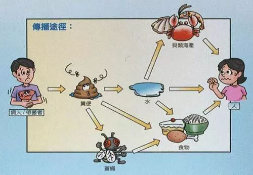
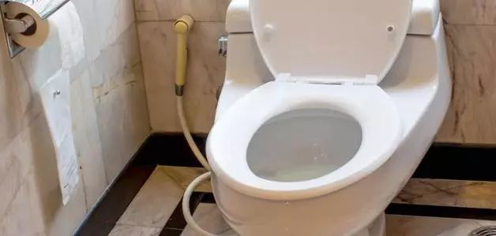

新型冠状病毒可能粪口传播？
什么是“粪口传播”？
我们应该怎么预防？
2月1日，深圳市第三人民医院透露，该院肝病研究所研究发现，在某些新型冠状病毒感染的肺炎确诊患者的粪便中检测出2019-nCoV核酸（新型冠状病毒）阳性，很有可能提示粪便中有活病毒存在。
钟南山：新型冠状病毒有可能通过粪口传播。现在这个问题应该非常重视，因为在粪便里发现病毒，粪便是否传染病毒值得高度警惕。在湖北、江西有些地方，确实有使用便桶习惯，还放在鱼塘里洗，要引起防控注意。
从调查来看，已经患病的人，在粪便带病毒有多少，要一步一步来调查。从了解来看，尿初步没有，但大便确实要引起注意。
什么是“粪口传播”？
粪口传播是指病人的粪便中存在病原体，排出体外后造成环境、水源或者食物污染，人们接触到这些污染物后可能感染。

（网络配图）
这是很多传染病的传播方式之一。另外，接触传播也可能是粪口传播的一种形式：人们接触到被粪便中的病毒颗粒污染的物件，再通过呼吸道或者消化道感染疾病。
我们应该怎么预防？
和呼吸道传播相比，粪口传播的能力可能要弱一些，预防方式更为简单。简单来说，勤洗手，进食、喝水之前一定要把手洗干净，就能够达到较好的预防传播效果。

（网络配图）
病人的排泄物在马桶冲刷过程中形成细小的微粒，产生水雾后可能成为呼吸道感染的途径，所以也要对马桶、厕所进行一些消毒措施，例如使用含氯清洁剂。
与确诊病例有过密切接触的人居家隔离时除了要戴好口罩、避免和其他成员接触外，最好单独使用厕所，不和家人共用厕所。没有条件的情况下，应该及时对其进行消毒，减少污染。冲刷马桶时最好盖上盖子，这样能减少水雾的产生。
对于居家的普通人要谨记，出门要戴口罩，回家第一件事一定要洗手，在准备食物或吃食物之前，也一定要洗手，外出时尽量少上公共厕所。